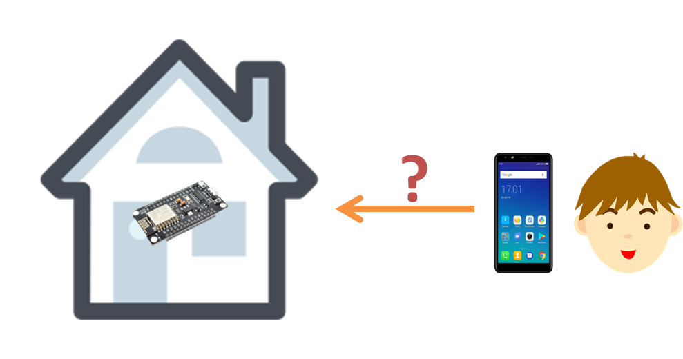

致敬「米家」
米家就在我家
自我介紹
- directions_walk 黃志賢 @hoyo.idv.tw
- directions_walk pc@hoyo.idv.tw
- directions_walk GitHub (https://github.com/HoyoHuang)
- directions_walk YouTube (Hoyo 的資訊生活 https://ppt.cc/fi8drx)
社群分享經歷
- assistant 2004 酷學園 X-Box + Linux
- assistant 2005 酷學園 2005 年群英會！ PHP的硬體控制術
- assistant 2007 酷學園 一月主題: php 的應用 - 支援 Socket
- assistant 2010 酷學園 ７月份 SA@Tainan 囉哩囉唆談「數位出版」
- assistant 2012 酷學園 群英會 有影嘸！？ - 雲端“影 分身術”
- assistant 2015 酷學園 7月份 SA@Tainan 愛愛上雲端
今天目的 - 以小米智能插座 WiFi 版為例
看到什麼？
- chevron_right 小姐姐
- chevron_right 插座
- chevron_right 50 人民幣 (225)
- chevron_right 使用 WiFi
- chevron_right 使用 APP 操作控制電源開關
- chevron_right 內部溫度感測
- chevron_right 定時 (主機推送不依賴 APP)、語音 (小愛同學)
沒看到什麼？
- chevron_right 閘道器 ( Gateway )
- chevron_right 如何設定 WiFi SSID & 密碼 ( SmartConfig )
- chevron_right SSL 傳輸加密
- chevron_right 廠商如何出貨及設計
彈幕發起來
https://hoyo.idv.tw/barrage.html
為什麼要自己做？
- build 巛暜
- build 番號
- build 上千人在荒郊野地
- build 參加 MOPCON
從選擇 IoT 開始 - ESP8266
- info_outline 可用 Arduino IDE 開發的最便宜 WiFi 模組 (NodeMCU NT 100)
- info_outline 支援 802.11 b/g/n
- info_outline 具備類比 I/O & 數位 I/O
- info_outline EEPROM
加強版： ESP32, LinkIt 7697
決定架構 - 把 IoT 設定為 AP Mode (Server)
決定架構 - 把 IoT 設定為 AP Mode (Server)
IPv6 & 入侵 (連線數限制)
決定架構 - 把 IoT 設定為 Client
決定架構 - Client 也可雙向連線

IoT 連線需求
- signal_wifi_4_bar_lock 商家出貨須有辨識身份 SN (Token)
- signal_wifi_4_bar_lock WiFi 連線設定方法 - SSID, Password
- signal_wifi_4_bar_lock SSL 傳輸加密
小米IOT开发者大会 ●
Arduino 範例程式
類 C，至少需要 setup() & loop()
// 加載、宣告
#define LED_PIN 13
// 開機只跑這麼一次
void setup() {
pinMode(LED_PIN, OUTPUT);
}
// 無限迴圈 什麼時候當機什麼時候到頭
void loop() {
digitalWrite(LED_PIN, HIGH);
delay(1000);
digitalWrite(LED_PIN, LOW);
delay(1000);
}
這就是為什麼要按住 reset 後再開機
Arduino - 使用 SmartConfig 設定 WiFi
- signal_wifi_4_bar_lock 無螢幕 Client IoT 較佳 WiFi 設定方案
- signal_wifi_4_bar_lock 將手機使用中的 WiFi 資訊丟給 IoT
- signal_wifi_4_bar_lock 原理是算 UDP 封包長度，因此 APP 是必須 (Cordova + Plugin)
Demo : IoT SmartConfig 設定 WiFi 及綁定
Arduino - SSL 加密 BearSSL::setFingerprint
#include <ESP8266WiFi.h>
#include <WiFiClientSecure.h>
const char fingerprint[] PROGMEM = "E7 67 DA 4F F0 7C CB 59 26 71 C8 D6 19 2B FF 89 75 A7 0C D0";
WiFiClientSecure client;
void setup() {
WiFi.mode(WIFI_STA);
WiFi.begin(ssid, password);
client.setFingerprint(fingerprint);
client.connect(host, port);
}
2.5.0 後開始支援，SSL 證書更新指紋也會更新
發個 X 年證書吧...
硬漢止步看這裡
Google: IoT platform

嫌麻煩的可以交給攤主處理...
Hoyo 的選擇？ Socket Server
- cloud_circle 隔行如隔山，還是找框架吧 ...
- cloud_circle 除了 Text 傳輸最好可以支援 WebSocket ...
- cloud_circle 最好是 PHP 的 ...
Socket Server - Workerman
Workerman 是一款开源高性能异步 PHP socket 即时通讯框架。支持高并发，超高稳定性，被广泛的用于手机 app、移动通讯，微信小程序，手游服务端、网络游戏、PHP 聊天室、硬件通讯、智能家居、车联网、物联网等领域的开发。 支持 TCP 长连接，支持 Websocket、HTTP 等协议，支持自定义协议。拥有异步 Mysql、异步 Redis、异步 Http、MQTT 物联网客户端、异步消息队列等众多高性能组件。
https://www.workerman.net/
WebSocket 範例 - 嚕阿嚕
ppt.cc/fHElBx
嚕阿嚕使用說明
- vibration 三人(設備) 一組
- vibration 一人主控畫面：選擇難度 → 開新局
- vibration 另外兩人分別掃描玩家 A, 玩家 B
- vibration 準備好之後開始搖手機
想換手機可以常玩
長連結通訊難點
- live_help 通訊協定：內容自訂
- live_help 設計「認人」方法
- live_help 長時間逾時：斷線心跳、資料庫再連接
通訊：一對一
通訊：對多
通訊對象必須自己記
Socket 的通訊協定設計 - 以嚕阿嚕為例
function wsSend(a,b,c,d) {
var command = {
'room': a, // 分區域
'player': b, // 使用者
'command': c, // 指令
'value': d, // 變數、數值
'checksum': 'xxxxxxx'
};
ws.send( JSON.stringify(command) );
}
Workerman - 基本架構
<?php
$w = new Worker("websocket://0.0.0.0:3001");
// 連接處理
$w->onConnect = function($connection){};
// 程式啟動處理 心跳推送、
$w->onWorkerStart = function($w){};
// 接收訊號處理
$w->onMessage = function($connection, $data){};
Workerman 通訊協定切換
WebSocket
$w = new Worker("websocket://0.0.0.0:3001");
Text Socket
$w = new Worker("text://0.0.0.0:3001");
主動推送 - Workerman
<?php
$w->onWorkerStart = function($w)
{
// 开启一个内部端口，方便内部系统推送数据，Text协议格式 文本+换行符
$inner_text_worker = new Worker('Text://0.0.0.0:3002');
$inner_text_worker->onMessage = function($connection, $buffer)
{
// $data数组格式，里面有uid，表示向那个uid的页面推送数据
$data = json_decode($buffer, true);
$uid = $data['uid'];
// 通过workerman，向uid的页面推送数据
$ret = sendMessageByUid($uid, $buffer);
// 返回推送结果
$connection->send($ret ? 'ok' : 'fail');
};
$inner_text_worker->listen();
};
https://wenda.workerman.net/question/508
主動推送 - send.php
<?php
// 建立socket连接到内部推送端口
$client = stream_socket_client('tcp://127.0.0.1:3002', $errno, $errmsg, 1);
// 推送的数据，包含uid字段，表示是给这个uid推送
$data = array('uid'=>'uid1', 'percent'=>'88%');
// 发送数据，注意 3002 端口是Text协议的端口，Text协议需要在数据末尾加上换行符
fwrite($client, json_encode($data)."\n");
// 读取推送结果
echo fread($client, 8192);
Socket 架構
Hoyo 怎麼做？ IoT 以外 ...
- WEB
- personal_video 商家出貨管理後台
- personal_video 使用者 Web 操作平台 (非必要)
- APP
- personal_video 使用者綁定 & 操作 APP
Demo : 商家出貨
Hoyo 怎麼做？ Web - 前後端分離
- personal_video 前端：HTML, JS, CSS, jQuery, php.js
php.js : js 使用 php function - personal_video 後端：PHP, phpQuery
phpQuery : php 使用 jQuery 選擇器操作 DOM
前端沒有 PHP ；後端沒有 HTML；php.js + jQuery + phpQuery 程式統一
網頁操作
Hoyo 怎麼做？ APP - Cordova (Android & iOS)
- phone_android 拿 Web 畫面套用
- phone_android SmartConfig (cordova-plugin-smartconfig)
- phone_android 目前使用 WiFi SSID & BSSID (WifiWizard)
Demo : APP 操作
情境 - 將單一或多個動作組成 HTTP API
觸發情境的方法
- gps_not_fixed 智能音箱
- gps_not_fixed 語音助理
- gps_not_fixed 其他： IFTTT, Chat Bot, 密室逃脫 ...
Demo : 粉紅遙控器
智能音箱 & 語音助理
- phone_android 智能音箱：Server - Server
- phone_android 語音助理：助理 - APP
- phone_android 第三方：IFTTT
決定架構 - 智能音箱串接
需要特定步驟才能在 APP 裝置清單內， ex: WF8266
連接情境和智能語音 - IFTTT
IFTTT，是一個新生的網絡服務平台，通過其他不同平台的條件來決定是否執行下一條命令。即對網絡服務通過其他網絡服務作出反應。IFTTT得名為其口號「if this then that」。
IF 「Google 助理聽到指令」 THAT 「執行 HTTP API URL」
加碼一時賺，一直加碼一直賺
- wifi WiFi AP 廣告 FakeBeaconESP8266
- wifi DeAuth 攻擊 esp8266_deauther
關鍵字整理
- pets hoyo.idv.tw/mopcon2019
- pets reveal.js
- pets DanMuer
- pets 小米IoT开发者大会
- pets NodeMCU ESP8266
- pets Arduino
- pets Workerman
- pets Cordova
- pets IFTTT
一鍵三連、打開小鈴鐺
我們下次見，今天也乾爽的回家吧
把把都是我說話，現在換你說了
找到(認識) 3 個以上的梗，贈送用功的你 ESP8266 一枚！